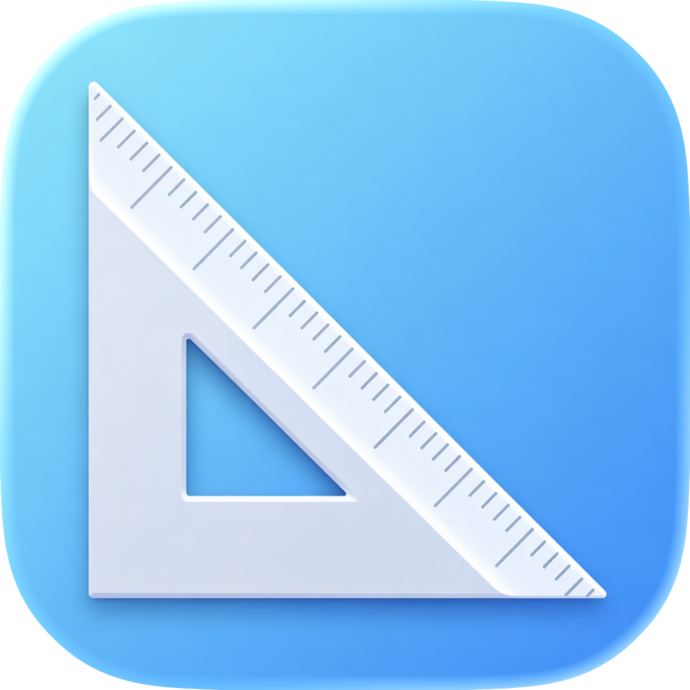

DB-Apps
Web Apps
CuCu
Scopri chi non ricambia il follow su Instagram.
CADScale
Calcola la scala corretta per layout AutoCAD.
macOS Apps (Apple Silicon)

AspectRatio
Calcola aspect ratio standard e risoluzioni compatibili con crop e overscale.
MetaLens
Analizza metadati di foto e video usando solo framework Apple.
GPSDivider
Divide automaticamente i media con o senza dati GPS.
BackInTime
Ripristina la data di creazione di foto e video dai metadati originali.
VidGrabber
Scarica video e audio da varie piattaforme tramite yt-dlp.
MoFFy
Converte video in HEVC o ProRes 422 HQ in formato MOV.
CleanFPS
Rimuove frame duplicati e genera video puliti a FPS costante.
ReRate
Modifica il framerate mantenendo invariato il numero di frame.